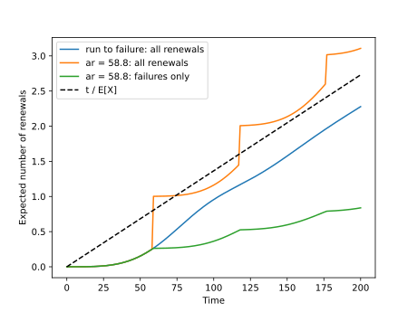

3.1. Renewal process#
A unique event model describes one asset until one event. In practice the asset is replaced when that event occurs, its replacement is replaced in turn, and so on. If every replacement is as good as new, the successive lifetimes are independent draws from the same lifetime model: this sequence of replacements is a renewal process.
RenewalProcess wraps any lifetime model this way:
>>> from assetlife.datasets import load_circuit_breaker
>>> from assetlife.lifetime_models import Weibull
>>> from assetlife.stochastic_processes import RenewalProcess
>>> dataset = load_circuit_breaker()
>>> weibull = Weibull().fit(time=dataset["time"], event=dataset["event"], entry=dataset["entry"])
>>> renewal_process = RenewalProcess(lifetime_model=weibull)
3.1.1. The renewal function#
The number of renewals \(N(t)\) observed up to time \(t\) is random. What is useful for planning is its average over an asset trajectory, the renewal function \(m(t) = \mathbb{E}[N(t)]\). It is the solution of the renewal equation:
\(F\) is the cumulative distribution function of the lifetime model and \(F_1\) the one
of the first lifetime (the two differ for assets that are not new at time 0 or with a technology
change, see below). The first renewal happens at some date \(x\), after which
everything starts over: hence the integral. AssetLife solves this equation numerically on a
regular timeline, given a final time tf and a number of points nb_steps:
>>> import numpy as np
>>> timeline, m = renewal_process.renewal_function(tf=100., nb_steps=10)
>>> np.round(timeline, 2)
array([ 0. , 11.11, 22.22, 33.33, 44.44, 55.56, 66.67, 77.78,
88.89, 100. ])
>>> np.round(m, 3)
array([0. , 0.001, 0.008, 0.036, 0.101, 0.217, 0.386, 0.588, 0.787,
0.957])
Renewals are rare during the first decades, then accumulate quickly: after 100 years, each position of the fleet has been renewed about once on average. Its derivative, the renewal density \(\omega(t) = m'(t)\), is the rate of renewals at a given date. Over a long horizon it tends to one renewal every mean lifetime (elementary renewal theorem):
>>> timeline, density = renewal_process.renewal_density(tf=100., nb_steps=10)
>>> np.round(density, 5)
array([0. , 0.0002 , 0.00133, 0.00392, 0.00804, 0.01297, 0.0171 ,
0.0186 , 0.0169 , 0.01359])
>>> round(float(1 / weibull.mean()), 5)
0.01365
3.1.2. Assets already in service#
If an asset is already a0 years old at time 0, its first lifetime is conditioned on
having survived up to a0, while the following ones start from zero. Such a process is
called delayed. Passing an array gives one column per asset:
>>> timeline, m = renewal_process.renewal_function(tf=100., nb_steps=10, a0=np.array([0., 30., 60.]))
>>> m.shape
(10, 3)
>>> np.round(m, 2)
array([[0. , 0. , 0. ],
[0. , 0.05, 0.25],
[0.01, 0.16, 0.52],
[0.04, 0.31, 0.75],
[0.1 , 0.51, 0.91],
[0.22, 0.71, 1.03],
[0.39, 0.89, 1.12],
[0.59, 1.04, 1.24],
[0.79, 1.16, 1.4 ],
[0.96, 1.29, 1.57]])
The older the asset, the sooner its first replacement and the gap persists over the whole horizon.
Also note that a different law for the first lifetime can be given at construction with
RenewalProcess(lifetime_model, first_lifetime_model=...). This is useful if the technology of
the underlying asset changed between the old one and the replaced one. You can combine a0 with
first_lifetime_model if you have a technology change and a first asset already in service.
3.1.3. Preventive replacements#
With an age of replacement ar, each asset is replaced either at failure or when it reaches
ar, whichever comes first: the lifetime model is replaced by \(\min(X, a_r)\). The
renewals then split into two kinds, each with its own counter:
Method |
Expected number of … |
|---|---|
|
renewals of any kind |
|
failures only (preventive replacements are not events) |
|
preventive replacements at |
Every renewal is one or the other, so the two counters add up to the renewal function. With the optimal age of the Getting Started, about 59 years:
>>> timeline, m = renewal_process.renewal_function(tf=100., nb_steps=10, ar=58.8)
>>> timeline, failures = renewal_process.expected_number_of_events(tf=100., nb_steps=10, ar=58.8)
>>> timeline, preventive = renewal_process.expected_number_of_preventive_renewals(
... tf=100., nb_steps=10, ar=58.8
... )
>>> np.round(failures, 3)
array([0. , 0.001, 0.008, 0.036, 0.101, 0.217, 0.265, 0.278, 0.314,
0.382])
>>> np.round(preventive, 3)
array([0. , 0. , 0. , 0. , 0. , 0. , 0.74 , 0.742, 0.754,
0.786])
>>> bool(np.allclose(m, failures + preventive))
True
Up to 58.8 years, every renewal is a failure. The surviving assets are then replaced preventively. Over 100 years, this increases the total number of renewals (1.17 instead of 0.96) but divides the number of failures by 2.5.
(Source code, svg)


This section shows that a renewal process only counts. To attach a cost to each renewal, see the details in Renewal process with rewards.